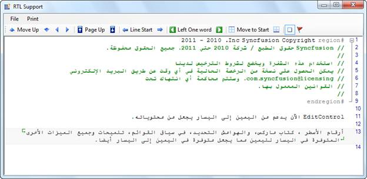

Right-To-Left Support for EditControl
EditControl supports rendering content in Right-To-Left (RTL) layout.
The following features that are present in Left-To-Right layout are also supported in Right-To-Left layout:
· Line numbers, Book Marks and Selection margins
· Context Menus, ToolTips and Dialogs
· Printing and print preview
· Line borders, Underline and Text Range customization
Use Case Scenarios
With RTL support, you can use EditControl, to render content in Right-To-left layout for languages such as Arabic. This is depicted in the screenshot below:

Figure 11: Right-To-Left Layout of Arabic
Properties
Table 1: Property Table
|
Property |
Description |
Type |
Data Type |
Reference links |
|
RenderRightToLeft |
Gets or sets a value indicating whether to render the content of the control in RightToLeft layout. |
Boolean |
Boolean |
Enabling Right-To-Left in EditControl
RTL can be enabled in EditControl with the Application Programming Interface (API) RenderRightToLeft as given in the following codes:
|
[C#] this.editControl1.RenderRightToLeft = true; |
|
[VB NET] Me.editControl1.RenderRightToLeft = True |
Sample Link
To view a sample:
1. Open the WPF sample browser from the dashboard.
2. Navigate to WPF Edit -> Advanced Editor Functions -> Right-To-Left Demo.